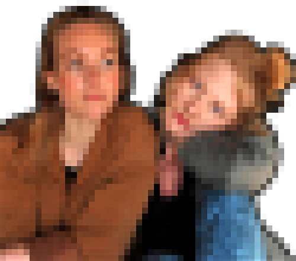
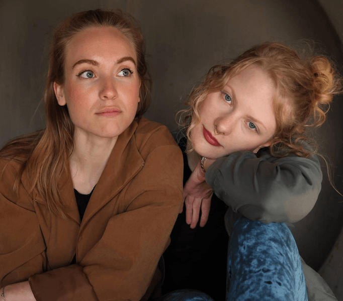

Frõ
Frõ is an experimental duo improvising through electronic music. Together, Frida Blomberg and Ada Hoel join their voices with electronic processing to create their musical landscape.
ADA HOEL
.
Under / Time
Time is slipping through my hands
I’m overtime, half time
My mind is morphing through states
till I’m out of time in no time
For a while I’ve wondered if wandering’s
waste of time or worth my while
Oh time, a limit for living
but take your time
Yes take your time

Frõ is an experimental duo improvising through electronic music. Together, Frida Blomberg and Ada Hoel join their voices with electronic processing to create their musical landscape.
Henriette Nok is an experimental indie-pop band consisting of Henriette Guldberg (vocals and guitar), Birgitte Bjerke (guitar), Lars Okstad (bass) and Ada Hoel (drums).
Young Voices is a vocal ensemble based in Trondheim which explores improvisation and interplay. Ada co-produced, recorded, mixed and mastered their latest EP “Autumn is the New Spring”.
Make SMA History is an independent awareness film directed by Erlend Glasø Faltinsen for Cure SMA, an organization working to find a cure for spinal muscular athrophy (SMA). Ada did the recording, mixing and mastering for this project.
At this event, the 20th anniversary of Klub Kanin, Ada performed an improvised solo set exploring loud bass, electronic bleeps and processed vocals.
Swamps Up Nostrils & Ada Hoel played together at Trondhjems Kunstforening during Mari Meen Halsøy’s exhibition WOUNDS where she staged a repairing of the wounds after the civil war in Beirut, Lebanon. To illustrate war and the ongoing aftermath they tore fabric apart and captured the sound with contact microphones, processed it and integrated it in their performance.

At the event “Å miste seg selv” (to lose yourself) the musicians got together for the first time on stage to create a spontaneus first meeting concert. Martin Lie Svendsen - banjo and upright bass, Dario Fariello - saxophone, Ada Hoel - voice and processing.
With Håkon Brunborg Kjenstad and Ola Djupvik Ada explored live cross-adaptive processing and auto-adaptive processing at Dokkhuset as part of her Bachelor’s Degree concert. With tools like Max/MSP, Max for Live and Ableton Live they dived into processing themselves and each other in different modes through improvisational playing.
ada.hoel@gmail.com
Webpage by
Mats N. Olsen
matsnordaasolsen@gmail.com